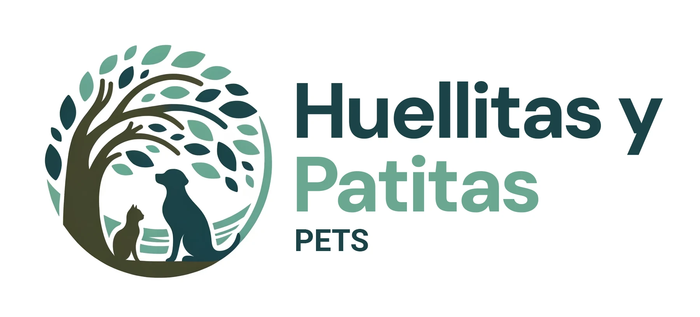

cremaciones de mascotas
perder a una parte importnte de tu familia como lo fue tu gato es doloroso y te deja en muchos casos con una sensación de desesperanza, pero para ello hay un servicio que es muy recurrente y que es el servicio funebre de la cremación que se hace tanto para animales como para personas. si bien no es un servicio barato aqui te dejamos algunas opciones donde dan servicio completo:
- www.mascotasporsiempre.cl: servicio 24/7 de servicios funebres y eutanasia en la region metropolitana
- www.haustierhaus.cl: servicios están disponibles exclusivamente en la ciudad de Santiago, de lunes a viernes, entre las 8:00 a 21:00 horas, días sábados y domingos entre las 8:00 a 20:00 horas.
- www.huellitasypatitaspet.cl: servicio de quematorio ecologico y eutanasia para la region metropolitana 24/7



RECUERDA QUE PEDIR AYUDA PARA SUPERAR LA PERDIDA DE UNA MASCOTA ES TAN VALIDO COMO SI PERDIERAS A UN SER HUMANO QUERIDO,NO TE HUNDAS EN ESE DOLOR,CONTACTA A UNA TERAPEUTA O UN PSICOLOGO